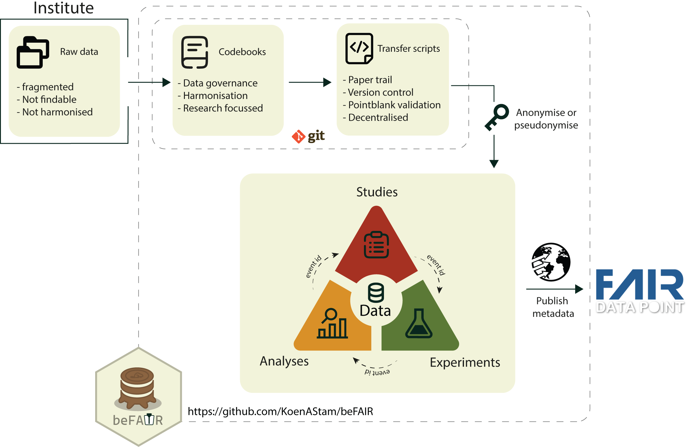

beFAIR: A Framework for FAIR Clinical Research Data
K.A. Stam
2026-11-12
Source:vignettes/overview.Rmd
overview.RmdThe Problem: Fragmented and Isolated Research Data
Modern clinical research platforms — particularly those running longitudinal cohort studies or multi-arm vaccine trials — generate data from a wide range of sources: patient registries, laboratory information management systems, high-dimensional immunological assays (CyTOF, Olink, ELISA, flow cytometry), and downstream computational analyses. Each of these data streams typically arrives in its own format, follows its own naming conventions, and is stored in its own silo.
The consequences are familiar to anyone who has worked in translational research:
-
Variable names diverge across studies —
age_at_enrolmentin one spreadsheet,AgeEnrolin another, andpt_agein a third. All describe the same thing, yet cannot be merged without bespoke recoding. - Source identifiers are not stable. A participant enrolled in two trials will carry a different ID in each — making cross-study linkage error-prone and difficult to audit.
- Metadata is sparse or absent. Raw data files are passed around without documentation of units, allowed values, or derivation logic, making reproduction and reuse nearly impossible.
- Provenance is opaque. When a result changes between analysis runs, there is often no systematic way to trace which data transformation caused the change, when it was introduced, or by whom.
- Interoperability is an afterthought. Datasets produced for one study are rarely formatted to be combined with others, even when the same assay and cohort population are used.
These are not edge cases: they represent the default state of multi-study research platforms that have grown organically over time. The result is substantial hidden overhead — data engineers spend a disproportionate share of their time on ad-hoc cleaning rather than on analysis, and the same harmonization work is often repeated from scratch each time a new study joins the platform.
The FAIR Principles as a Design Target
The FAIR data principles, first formulated by Wilkinson et al. (2016), provide a widely adopted framework for addressing exactly these problems. Data should be:
| Principle | Meaning |
|---|---|
| Findable | Data and metadata are assigned persistent identifiers and described with rich, searchable metadata. |
| Accessible | Data can be retrieved through open, standardised protocols; metadata remains accessible even when data are not. |
| Interoperable | Data use shared vocabularies, ontologies, and formats so that they can be understood and combined by humans and machines. |
| Reusable | Data are described in sufficient detail that they can be correctly reused for new purposes, by investigators not involved in the original collection. |
FAIR compliance is increasingly required by funding bodies (NIH, NWO, H2020/HE) and journals, and it is central to open science mandates. Yet in practice, achieving FAIR compliance in a running multi-study research environment requires tooling — a structured workflow that enforces standards consistently, without placing an unreasonable burden on individual researchers.
beFAIR: A Structured Scaffold for Research Data Harmonization
beFAIR is an open-source R package that operationalises the FAIR principles for clinical research platforms. Rather than retrofitting FAIR compliance onto existing data after the fact, beFAIR establishes a structured scaffold from the very first data contribution: a shared, codebook-driven schema, an auto-generated ETL (Extract–Transform–Load) pipeline, and a version-controlled audit trail — all within a familiar R environment.
The core idea is straightforward: every dataset that enters the platform must conform to a shared codebook before it is admitted to the database. The codebook defines variable names, data types, units, allowed categories, and validation rules. Scripts that load data are drafted automatically from the codebook and are tracked in a registry. The result is a single, queryable SQL database in which all studies, experiments, and analyses speak the same language.

How beFAIR Works
1. A Shared Vocabulary: Codebooks
The foundation of beFAIR is its codebook system. Each database table is defined by a YAML codebook file that specifies:
- the canonical name of every variable,
- its data type and SQL type,
- its units and allowed categories or labels,
- point-in-time validation rules (e.g., age must be between 0 and 120).
age:
description: Age of subject at enrollment, in years.
units: years
type: numeric
type_sql: DECIMAL
validations:
- col_vals_between:
left: 0
right: 120
na_pass: truebeFAIR ships with a library of built-in codebooks that cover the common data entities in clinical immunology research: study participants, study arms, adverse events, sample metadata, and outputs from assays including CyTOF, Olink, ELISA, Aurora, LC-MS, glycan arrays, and computational clustering analyses. Projects can extend this library with custom codebooks for assays or schemas unique to their platform.
Codebooks are versioned. A minor version bump (e.g., 1.0
→ 1.1) updates metadata only and leaves the database table
intact. A major version bump (e.g., 1.x → 2.x)
signals a breaking schema change and triggers a controlled
drop-and-recreate of the affected table. This versioning mechanism means
that schema evolution is explicit, documented, and auditable.
2. A Three-Pillar Project Structure
A FAIRground directory organises all data contributions into three logical pillars:
| Pillar | Directory | What it contains |
|---|---|---|
| Study | studies/ |
Clinical metadata — participants, study arms, scheduled events, and the identity mapping that links raw source IDs to pseudonymous participant IDs. |
| Experiment | experiments/ |
Laboratory measurements linked to participant samples — e.g. CyTOF protein expression, ELISA titres, Olink proteomics, glycan profiling. |
| Analysis | analyses/ |
Derived or processed results computed from study and experimental data — e.g. gating phenotypes, cluster assignments, statistical outcomes. |
Each pillar subdirectory contains:
- a
meta.yamldescribing the dataset (name, responsible investigator, associated study or experiment, declared dependencies); - one or more ETL scripts (
*.R) that transform raw source files into database-ready data frames; - a
data/folder pointing to the raw source files.
This structure makes it immediately clear where any given dataset lives, who is responsible for it, and what it depends on.
3. Pseudonymization and Stable Cross-Study Identifiers
A persistent challenge in multi-study platforms is linking the same
participant across studies without revealing identifying information.
beFAIR addresses this through a dedicated id_mapping
codebook and a deterministic pseudonymization step.
Each study contributes an ID mapping table that pairs raw source
identifiers (e.g., a hospital patient number) with a study-specific
participant number. From these, beFAIR derives a stable, pseudonymous
participant_id by computing a SHA-256 hash of the
combination of the study identifier and the zero-padded participant
number, then taking the first six hexadecimal characters. The resulting
identifier (e.g., CHSI1_a3f9b2) is reproducible given the
same inputs, collision-resistant, and contains no recoverable personal
information.
The same participant enrolled in two studies will receive the same
participant_id in both, enabling cross-study joins without
ever exposing raw identifiers in the analytical database.
4. Auto-Generated ETL Scripts with Built-in Validation
Once a study, experiment, or analysis has been registered, beFAIR
automatically drafts the ETL scripts needed to populate the database.
The researcher’s task is reduced to filling in the mapping logic — how
does column X in the raw data file correspond to variable
Y in the codebook?
Every ETL script produces a standardised databook object
containing the harmonized data frame, a reference to the codebook, and a
validation report. Before any data is written to the database, the
validation rules defined in the codebook are executed automatically.
Rows that fail validation are flagged; the run is logged with a full
record of which rules passed and which did not. This built-in quality
gate prevents malformed data from silently entering the database.
5. A Version-Controlled Audit Trail
beFAIR is designed to work within a Git repository.
The project directory — codebooks, ETL scripts, and
meta.yaml files — is committed to version control. This
design choice has several important consequences:
- Every change is attributed: Git records who modified a script, what they changed, and when. This is the minimal requirement for a credible audit trail in a regulated research environment.
- Rollback is straightforward: If a data error is introduced by a script change, the previous version of the script can be restored from Git history and the affected database entries can be reloaded.
- Collaboration is structured: New contributors work on branches; changes are reviewed via merge requests before they affect the shared database. The review process is itself documented in the Git history.
-
Reproducibility is guaranteed: Because the database
is always a deterministic function of the scripts in the repository, the
exact state of the database at any point in time can be reconstructed by
checking out the corresponding commit and running
databaseUpdate().
Alongside the Git history, beFAIR maintains an internal
script registry (table_script) that tracks
the MD5 hash of every ETL script, the codebook version it targets, and
the last run timestamp. When databaseUpdate() is called, it
detects new or modified scripts, reruns only those that have changed,
and updates the registry accordingly. The database is always in a known,
documented state.
Key Benefits
For researchers and data contributors
- Low barrier to entry: ETL scripts are auto-drafted; researchers fill in mapping logic rather than writing infrastructure from scratch.
- Immediate feedback: Validation errors are surfaced before data reaches the database, not weeks later when downstream analyses break.
- No bespoke recoding: Because all studies use the same codebook-defined variable names, cross-study joins work out of the box.
For data managers and platform maintainers
-
Single command to update the database:
databaseUpdate()orchestrates codebook synchronisation, script detection, ETL execution, validation, and loading — in one call. - Schema evolution is controlled: Codebook versioning ensures that breaking changes are deliberate and documented, never accidental.
- Provenance is always traceable: The script registry and Git history together answer what data is in the database, which script put it there, and which version of that script was used.
For funders and ethics committees
- FAIR compliance is structural, not aspirational: Findability, accessibility, interoperability, and reusability are enforced by the framework, not dependent on individual researcher discipline.
- Data governance is transparent: The combination of Git history, codebook versioning, and the script registry provides the documentation trail required for regulatory submissions and data sharing agreements.
- Reuse is built in: Because all data is stored in a shared, well-described SQL database with a stable schema, datasets from separate studies can be combined for secondary analyses without additional harmonization work.
Summary
beFAIR addresses the fragmentation problem at its root, by making structured, harmonized, and traceable data the path of least resistance rather than a retrospective effort. Researchers contribute data through auto-generated ETL scripts that enforce a shared codebook-defined schema. Pseudonymous participant identifiers enable cross-study linkage without privacy risk. Git version control provides an immutable, attributed record of every change. And a single orchestration function keeps the database synchronized with the latest scripts at all times.
The result is a research data platform in which every dataset is findable, accessible, interoperable, and reusable — not because researchers are asked to fill in metadata forms after the fact, but because the tooling makes FAIR the default.
References
Wilkinson, M.D., Dumontier, M., Aalbersberg, I.J. et al. (2016). The FAIR Guiding Principles for scientific data management and stewardship. Scientific Data, 3, 160018. https://doi.org/10.1038/sdata.2016.18